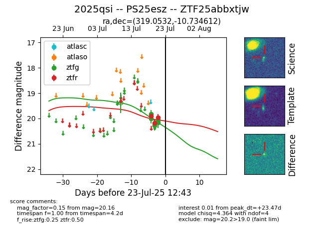

Target ZTF25abbxtjw at 2025-07-23 11:52, see:
FINK: fink-portal.org/ZTF25abbxtjw
Lasair: lasair-ztf.lsst.ac.uk/objects/ZTF25abbxtjw
ALeRCE: alerce.online/object/ZTF25abbxtjw
TNS: wis-tns.org/object/2025qsi
YSE: ziggy.ucolick.org/yse/transient_detail/2025qsi
alt names
ZTF25abbxtjw (ztf,fink)
2025qsi (tns,yse)
PS25esz (panstarrs)
coordinates:
equatorial (ra, dec) = (319.0532,-10.73461)
galactic (l, b) = (40.0336,-36.96217)
photometry
last ztfg=20.16, ztfr=19.96
5 ztfg, 3 ztfr detections
